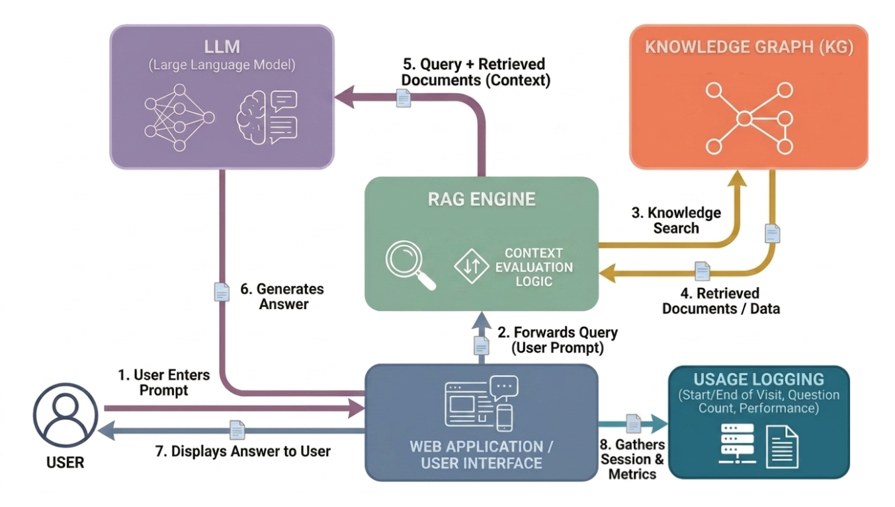
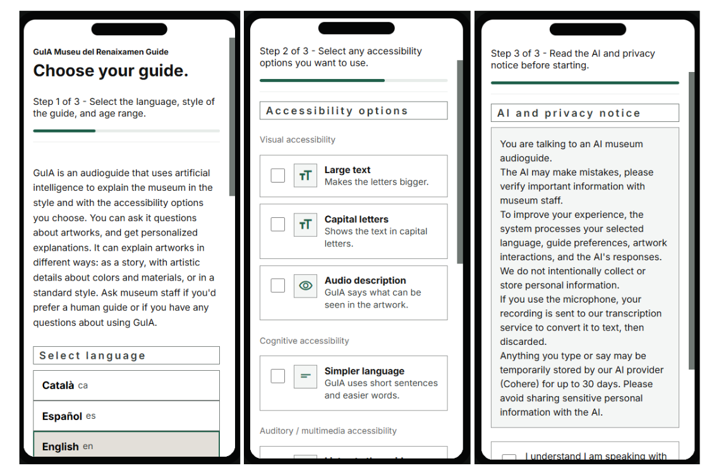
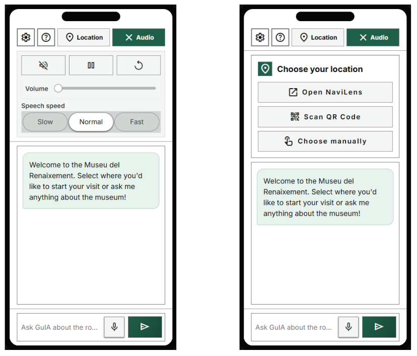
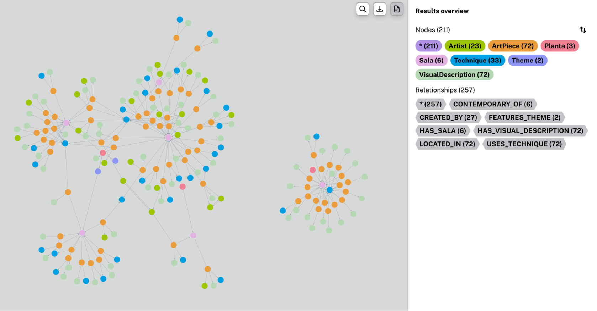
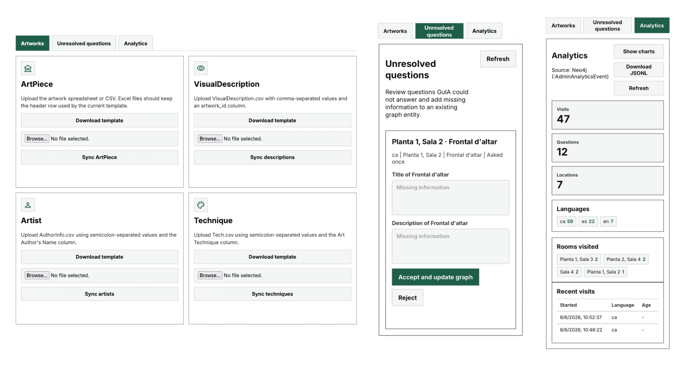

GuIA — Renaixement Museum Audioguide
- Tech Stack: Python, Flask, Neo4j, Cohere (Command A), iDEM API, JavaScript, HTML/CSS
- Domain: Retrieval-Augmented Generation, Knowledge Graphs, Accessibility, Cultural Heritage AI
GuIA is a browser-based, multilingual audioguide that grounds every answer in a curated Neo4j Knowledge Graph. A RAG pipeline translates natural-language visitor questions into Cypher queries, retrieves the relevant graph context (artworks, artists, techniques, rooms), and conditions generation on that context, with an explicit refusal policy when no grounded information is available. The system supports voice and text interaction (Whisper for transcription, edge-tts for speech), situated location context via QR/NaviLens, and a dedicated Easy-Read pipeline built on the iDEM simplification API for visitors with cognitive or intellectual disabilities. The project includes a full evaluation harness measuring retrieval recall, generation faithfulness, cultural-bias deviation across languages, and prompt sensitivity, alongside co-design sessions with accessibility organisations.

End-to-end RAG pipeline

Three-step onboarding - personalization, accessibility options, and AI/privacy notice.

Main chat interface showing audio and location menus

Curated Knowledge Graph — Visualization of the entity–relationship graph in Neo4j.

Admin dashboard — museum staff sync the Knowledge Graph, review unresolved questions, and monitor usage analytics
Information Gathering & Methodology
The Knowledge Graph was built from heterogeneous sources: a museum-provided artwork inventory, an authored audioguide script and room descriptions, supplemented with museum-website content, Wikipedia data on artists and techniques, and AI-generated visual descriptions for accessibility. Building the graph itself was an iterative process, an initial attempt using an LLM-based graph constructor produced thousands of duplicated, inconsistently-named relationships, which was discarded in favor of a custom parser populating a fixed schema, giving the museum direct control over node and relationship creation.
Highlights
- Built a RAG pipeline where the LLM generates read-only Cypher queries against a Neo4j Knowledge Graph, with query repair, retry, and deterministic fallbacks for navigation and location intents.
- Designed a curated Knowledge Graph schema (ArtPiece, Artist, Technique, Sala, Planta, VisualDescription) via a custom parser, after discarding LLM-based graph construction due to unreliable, duplicated relationships.
- Implemented an accessibility-first Easy-Read pipeline integrated via a separately deployed iDEM API, with automatic fallback to standard generation on failure.
- Designed dual onboarding tutorials (visual step-by-step and spoken/screen-reader-friendly) informed directly by accessibility expert interviews.
- Built an admin dashboard for content sync, unresolved-question review, and metadata-only analytics, keeping curatorial control with the museum.
- Engineered a four-component automated evaluation framework (retrieval recall, faithfulness, cultural-bias deviation via KL divergence, prompt sensitivity) run across Catalan, Spanish, and English.
- Achieved ~97% retrieval recall and ~95% generation faithfulness across languages, with zero fabricated answers when no context was retrieved.
- Conducted co-design and evaluation with accessibility organisations (Aura Fundació, Asociación Discapacidad Visual Catalunya, Down Tarragona), directly shaping interface and pipeline decisions.